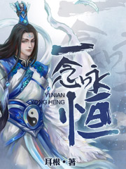
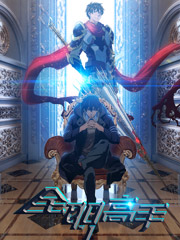
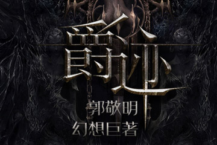
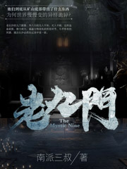
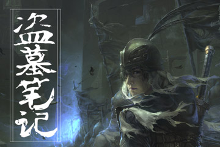
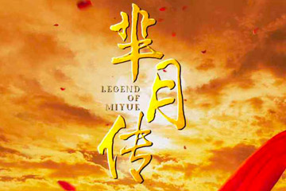
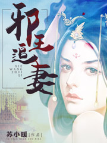

《国民老公带回家》是 90 后美女作家叶非夜的文风成熟后的代表作品，同名小说改编的漫画广受热议，同时改编的动画两季播放量达到 1.3 亿，正在不断创造新高。
-

《凌天战尊》是上古世纪征文大赛的优秀作品，也让新人作家风轻扬走到大家的视野中。
- 
《一念永恒》是「网文之王」五大至尊之一作家耳根的最新力作，新书提笔不过寥寥数字，就吸引一响天开影业掷千万重金夺下影视版权。在影游联动的互助驱动下，其游戏改编权的市场价值有望再刷新高。
《致青春》是辛夷坞的青春爱情小说，讲述了一群青春少年从大学校园的追爱之旅到步入社会的迷雾和抉择的故事。同名小说改编的电影，2014年作为赵薇导演的处女座，颇受业内好评；改编的电视剧也已于2016年7月陆续登陆各大卫视。
《龙王传说》是唐家三少《斗罗大陆》系列的第三部。同名小说改编的漫画和游戏都收到了颇多的关注。
《武动乾坤》是起点白金作家天蚕土豆的第三部长篇小说。同名小说改编的电视剧已于2016年开拍，多次曝光了人物海报，演员阵容强大。同时，该作改编的漫画、各类游戏都表现抢眼。
- 
《全职高手》是作家蝴蝶蓝的封神之作。离作品完结已隔数年，出版成绩依然喜人，同名小说改编的漫画颇受追捧，改编的动画播放初始，播放量已达3.5亿，有望成为国产动画的又一经典。
《琅琊榜》根据海晏同名网络小说改编，电视剧2015年播出后，口碑与收视俱佳，反响热烈，红遍全球。在影游联动的驱动下，游戏改编权也相继授出。
《从前有座灵剑山》是国王陛下在创世中文网开始创作的仙侠类小说。2014年8月，在腾讯动漫网络漫画化，并根据漫画在2016年1月8日改编成日本电视动画，是国产动漫的创新之作。
《弑天刃》是小刀锋利又一部东方玄幻类小说，期待着能成为IP全版权开发的一个优秀案例。
《圣墟》是起点中文网白金作者、网文五大至尊之一的辰东的新作，一经推出，各大公司就争相了解版权情况，目前同名游戏火热上线中。

凌舞水袖的神话喜剧小说，现已改编同名动漫及同名网剧，是一部充满潜力的 IP。

由著名作家跳舞创作的一部西方奇幻作品，首发于起点中文网，同名RPG手游由巨人移动精心制作，同名3D玄幻网络游戏由空中网开发。

乱连载在起点中文网的玄幻小说，已改编成动画，于2016年9月2日起每周五在腾讯视频独家网络更新。
- 
郭敬明的长篇小说，后改编成由范冰冰、杨幂、吴亦凡主演的真人CG奇幻片，同名网剧也在改编制作中。
- 
改编自南派三叔所著同名小说《老九门》，由赵丽颖、张艺兴主演，2016年7月4日在东方卫视周播剧场播出，爱奇艺同步上线，荣登2016中国泛娱乐指数盛典「中国网生内容榜-网络剧榜top10」。
《末日乐园》是起点作家须尾俱全连载在起点女生网的末世无限流小说，这是一部设定新颖，脑洞大开，剧情惊悚莫测，逻辑合理严谨的小说。
《择天记》是网文大神猫腻的作品，一经推出便蝉联人气榜冠军。作为阅文集团的重点 IP 之一，《择天记》影视现已问世，动画、游戏、出版、漫画都已在开发过程中。
- 
10年沉淀的超级IP，曾荣登「中国IP价值榜-网络文学榜Top10」，网剧的播出开启了「盗墓文学IP年」。
耳根的古典仙侠小说，进行过游戏、舞台剧、微电影等形式的改编，网络剧改编也在启动中。
天下霸唱创作的经典悬疑盗墓小说，先后进行过漫画、游戏、电影、网剧的改编，均取得不俗成绩，当之无愧的超级IP。
改编自月关的畅销小说，钟澍佳、梁胜权、黄俊文执导，张翰、朴敏英主演，拥有天生丽质的重磅IP价值，堪称最被期待的剧集之一。
- 
蒋胜男原创小说《芈月传》，进行了电视剧、游戏等多种形式的改编，一度掀起芈月热潮。
沐轶所著古装穿越推理破案题材的网络小说，根据其改编的网络剧上线后备受好评，是以小博大的IP改编代表性案例。
改编自李歆的同名小说《独步天下》，由企鹅影视、悦凯影视、新丽传媒联合出品，林峰、唐艺昕领衔主演，正在拍摄中，预计2018年上线。
- 
苏小暖所著同名小说，出版名为《一世倾城》，曾获获得2015年度“中国原创文学风云榜”的“年终桂冠”，目前仍在连载中。
起点白金作家天蚕土豆的代表作，荣登「中国IP价值榜-网络文学榜top10」，其改编的漫画、动漫、游戏均广受欢迎，同名电视剧（吴磊主演）即将上映，同名电影同步制作中。